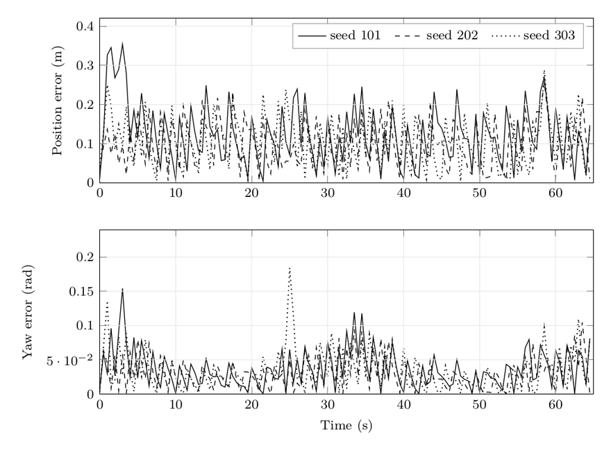
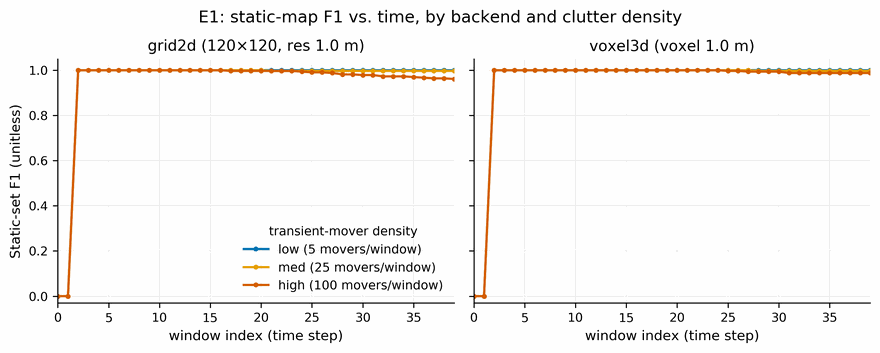
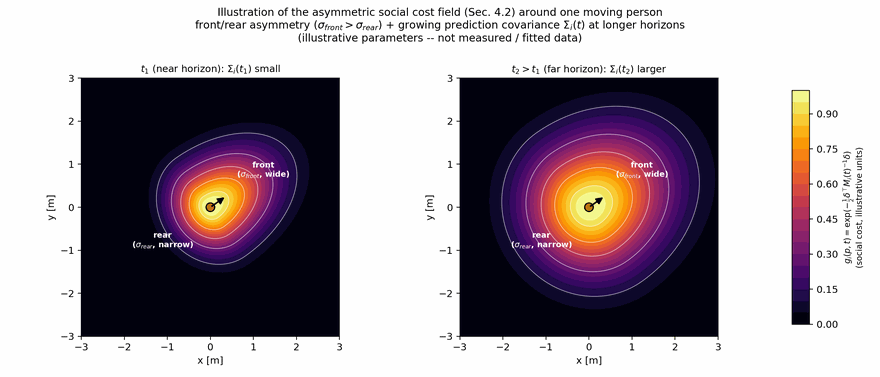
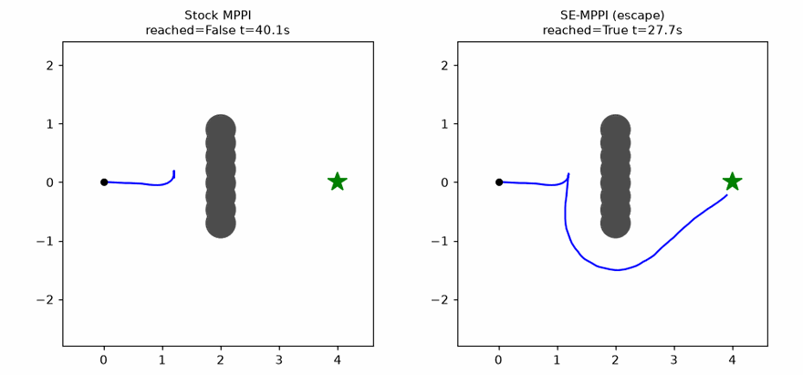
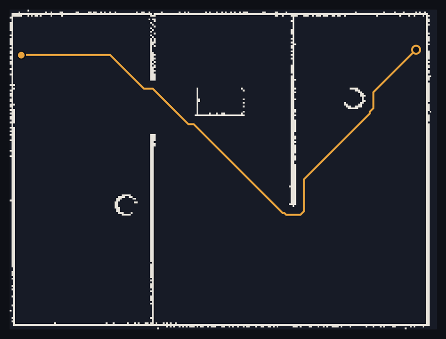
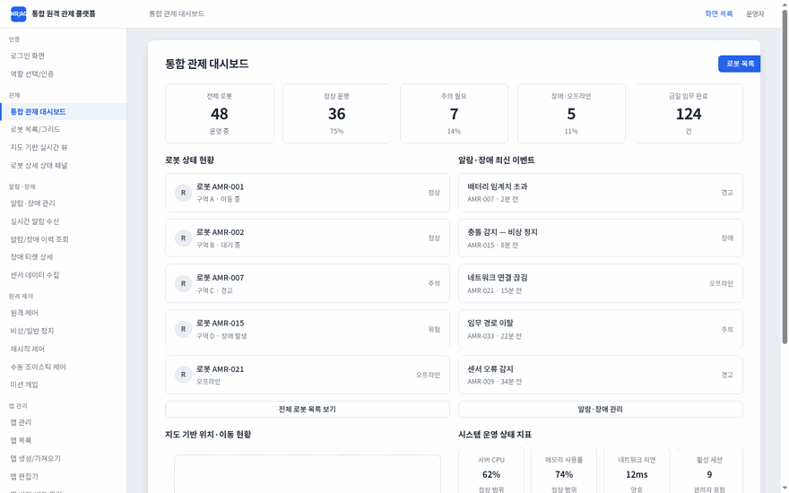

Case study
prism_loc
Pluggable LiDAR localization for ROS 2: 2D MCL, 3D NDT-MCL, and LiDAR+IMU+RTK-GNSS ESKF fusion over middleware-free C++17 estimator cores, one map→odom contract.
ROS 2C++17MCLESKF
ROS 2 · C++20 · SLAM & NAVIGATION · AI-NATIVE DEV SYSTEMS
Robotics Software Engineer·6 yrs
Open to conversations about robotics software, ROS 2 architecture, and AI-native engineering practice.
I build autonomous mobile robots, and the engineering system around foundation models that lets them ship safely.
Estimator cores kept free of middleware, ROS 2 wired in only at the edges, and every performance claim backed by tests plus committed evaluation artifacts, not screenshots.

Pluggable LiDAR localization for ROS 2: 2D MCL, 3D NDT-MCL, and LiDAR+IMU+RTK-GNSS ESKF fusion over middleware-free C++17 estimator cores, one map→odom contract.

Pluggable lifelong LiDAR mapping for ROS 2: selectable 2D occupancy / 3D voxel backends, Bayesian persistence with FreMEn periodicity, 6-DoF. Sibling of prism_loc.

Commitment-based passing for social robot navigation: temporally consistent left/right passing decisions with lexicographic safety. Nav2 controller plugin, Gazebo testbed, and paper (arXiv-ready).

Nav2-native MPPI local controller: online local-minima detection-and-escape plus a dynamic-obstacle CBF safety filter, validated on a 1,200-trial randomized benchmark.

A complete AMR software stack written from scratch: 2D sim, log-odds mapping, scan-matching SLAM, MCL, A*+DWA planning, nav FSM, HRI GUI, all in pure Python plus C++ ROS 2 ports.

Operator console for AMR/AGV fleet control: 30 interactive screens (dashboard, live map, remote control, KPI analytics) as a fully client-side React 19 + TypeScript app.
Client and employer names withheld. What “on-site” meant here: months of bring-up on the factory floor, crash triage against real hardware, and pilots carried into commercial rollout.
AMR software engineer, on-site deployment
Feature development, maintenance, field debugging
Bring-up → autonomy → certification
SDK architecture & robot integration
Full robot software, algorithm tuning
Application engineer
What sets my work apart is not that I use foundation models. It is the engineering system I build around them, proven on a safety-critical robot codebase.
An orchestrator coordinates specialized sub-agents with context isolation per task. The unit of work is a structured task with defined inputs, a verification step, and a record, not a chat.
Every commit is auto-reviewed; merges gate on AI review plus ASan/UBSan/TSan sanitizers in CI. The gates don't care who wrote the code, human or model.
Custom skills, event hooks, tool integrations, and cross-session memory: a small internal platform with its own standards, repeatable beyond any single project.
Model output is grounded against real-robot behavior before it is trusted; models are selected per task for reliability; my own FM usage is logged and self-audited.
Long-form on how I engineer, and a deep dive on one flagship project: architecture, contracts, and the tradeoffs behind them.
FEATURED WRITEUP
Not the prompts: the pipeline, the gates, and the judgment. How a multi-year ROS 1 → ROS 2 migration ships fast without losing quality.
Read the article →CASE STUDY
Why the estimator cores stay middleware-free, how a single map→odom contract lets 2D MCL, 3D NDT-MCL, and ESKF fusion swap in place, and what that costs.
Read the case study →I'm a robotics software engineer with six years building and deploying autonomous mobile robots across smart-factory, logistics, mobility-assistance, airport, and food-service settings. I've shipped 30+ AMRs and 50+ serving robots into real-world operation.
I solve at the system level: onboard autonomy, fleet and control-system integration, GUIs, and communication protocols, not just at the code level. Right now I'm leading a multi-year migration of a legacy ROS 1 robot stack to a modular, middleware-agnostic ROS 2 platform in C++20, owning it from architecture through release. Before software, I trained in international trade, and I bring that domain-first habit of thinking to engineering.
What drives me is turning robots from research demos into products that actually work on the floor.
Korean (native) · English (professional) · German (B1)